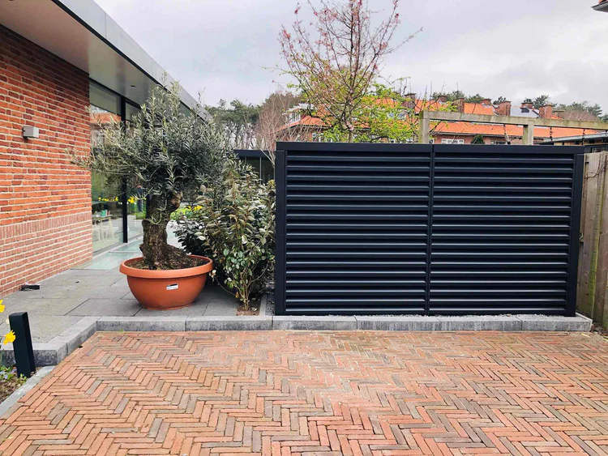

Wat de buren horen
Afstand, muren en toerental veranderen het resultaat. Een sierkap dempt nauwelijks. Een akoestische kast heeft een berekende luchtweg.
Campagne · buren & VLAREM
Een klacht, een nachtrichtwaarde of een onrustige slaapkamer: het startpunt is het geluid aan de perceelsgrens — niet het cataloguscijfer van de unit. REDUCD dempt gemiddeld 14 dB(A) (vrijstaand, Peutz). “75% stiller” is waargenomen luidheid, geen garantie.
Reactie binnen 24 uur. Eerst check op afstand; meting alleen als de case dat vraagt.

Afstand, muren en toerental veranderen het resultaat. Een sierkap dempt nauwelijks. Een akoestische kast heeft een berekende luchtweg.
In woongebied is de nachtrichtwaarde vaak 35 dB(A). Reken eerst theoretisch, meet daarna. Geen juridisch advies.
Standaard S Magnelis, zonder installatie. Wandmodel 10–12 dB(A). Open de keuzehulp voor een waarschijnlijke maat.